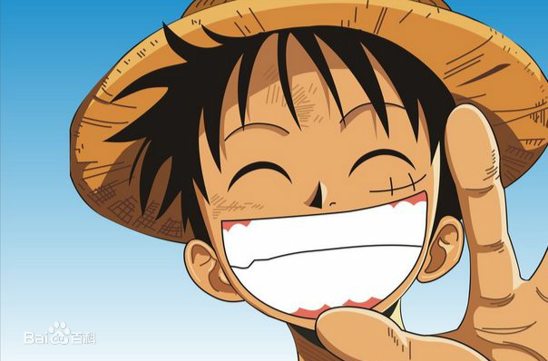

蒙奇·D·路飞，日本漫画《航海王》及其衍生作品中的男主角。外号“草帽”路飞，是草帽一伙、草帽大船团船长，极恶的世代之一。橡胶果实能力者，悬赏金15亿贝里。梦想是找到传说中的One Piece，成为海贼王。
路飞性格积极乐观，爱憎分明，宁死不屈，十分重视伙伴与朋友，对任何危险的事物都超感兴趣。和其他传统的海贼所不同的是，他并不会为了追求财富而杀戮，而是享受着身为海贼的冒险和自由。
| 中文名 | 蒙奇·D·路飞 | 虚拟人物血型 | F型 |
| 外文名 |
モンキー・D・ルフィ Monkey D. Luffy |
身高 | 172cm->174cm |
| 别名 |
草帽小子 第五位海上皇帝 |
恶魔果实 | 橡胶果实 |
尾田荣一郎根据日本漫画《龙珠》而构思出来路飞这一角色。尾田在连载《航海王》之前，还推出过短篇海贼漫画《冒险的黎明》，该漫画的主角也叫路飞，是《航海王》中路飞的雏形。
作者尾田荣一郎在《航海王》连载10周年的纪念情报志《ONE PARA》中表示，路飞（Luffy）这名字源自英语“Luff”，意即“逆风航行”，这是他想过最适合船长使用的名字。此外，他也指出路飞生下来就是运势非凡的人；只有实力和运气兼备的人，才能成就伟大功业 [15] 。
路飞的姓氏蒙奇（Monkey），和英文里的“猴子”相同。而路飞的代表动物也是猴子。